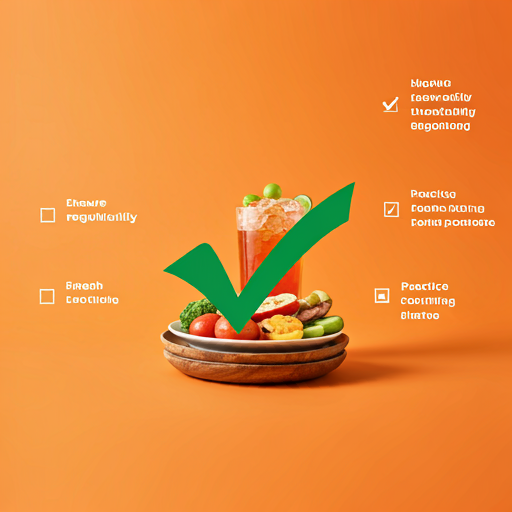
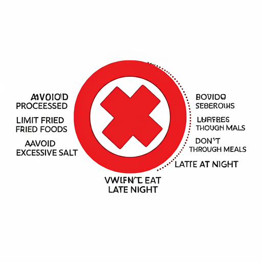

Practice
Details
Image
Do
Hydrate regularly,chew food thouroughly,Mindful eating,Eat fresh,practice portion control,

Don't
Avoid Processed Foods,Limit Fried Foods,Avoid Excessive Salt,Don’t Rush Through Meals,Don’t Eat Late at Night
